01ជ្រាល · Deeper stacksបីជាន់
«កញ្ចោង»។ «ក» ធំ «ញ» និង «ច» តូចជាន់គ្នា អាន kɑn-chong។
កញ្ចោង: big ក with ញ and ច stacked small — one beat.
Reduced syllables II — deep clusters · មេរៀនទី ៧ · Lesson 7 of ភាសាខ្មែរ កម្រិត ១
ពាក្យខ្លះមានព្យញ្ជនៈបីជាន់ក្នុងព្យាង្គតែមួយ ដូចជា «កញ្ចោង»។ អានព្យាង្គដើមខ្លីបំផុត រួចបន្លឺព្យាង្គចុង។
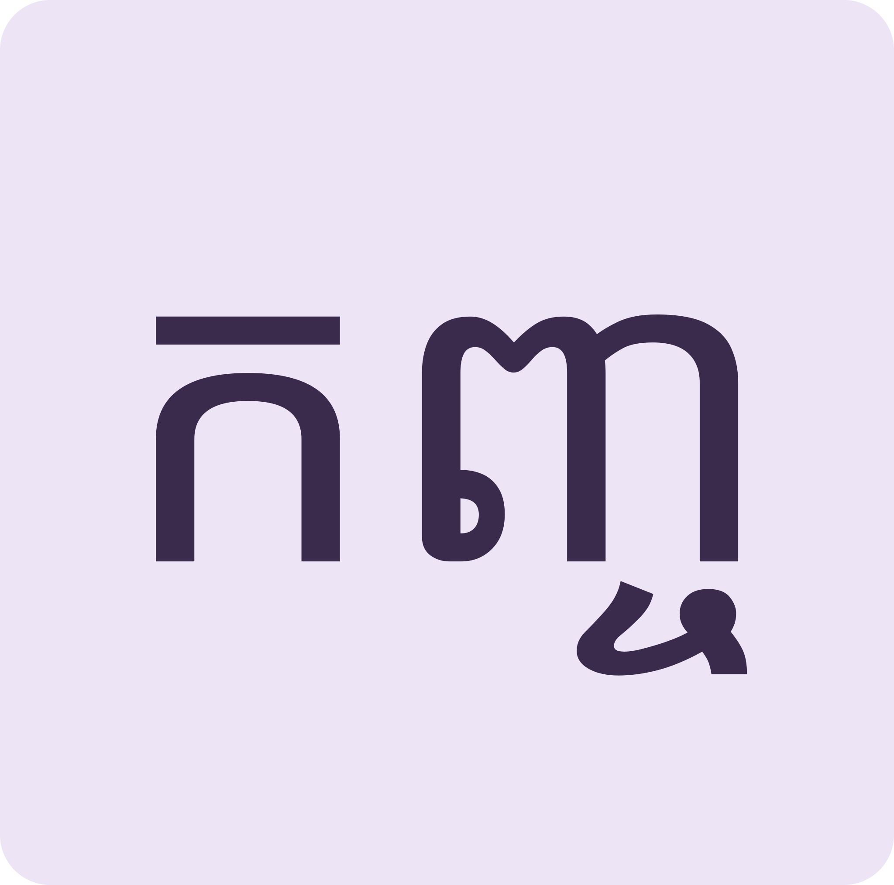
បីជាន់មួយព្យាង្គThree layers, one beat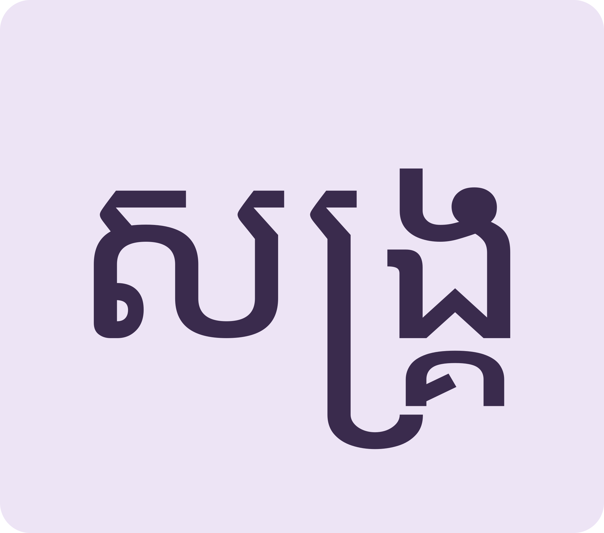
អក្សរនៅពេញ តែសំឡេងមួយFull spelling, single sound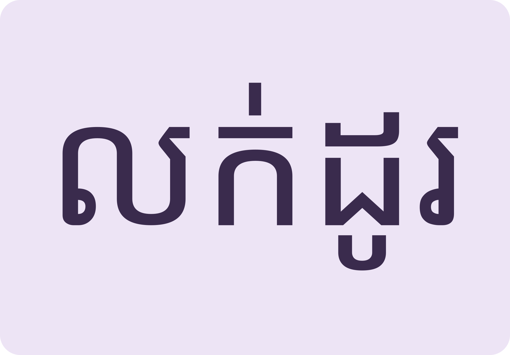
ពាក្យទីផ្សារMarket talk uses them dailyMeet the triple stacks, drill the hard words, then talk about village businesses.
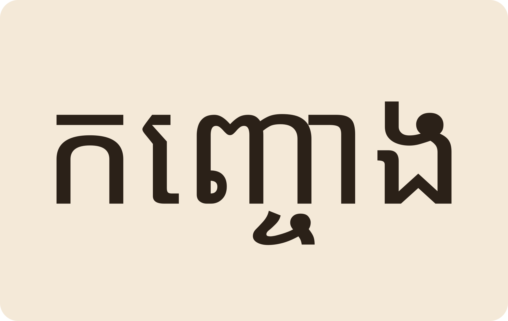
Space listen · ← → move · K show text
«កញ្ចោង»។ «ក» ធំ «ញ» និង «ច» តូចជាន់គ្នា អាន kɑn-chong។
កញ្ចោង: big ក with ញ and ច stacked small — one beat.
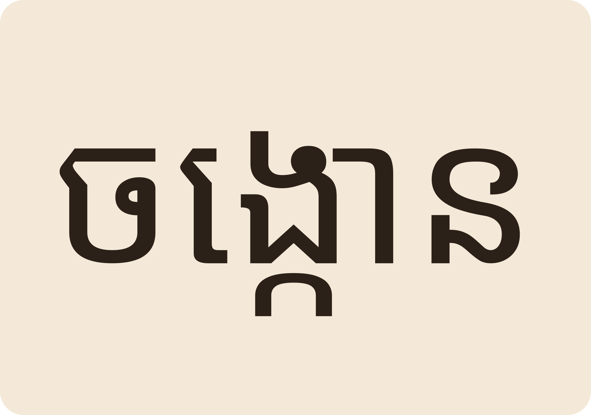
«ចង្កោន» ladle។ «កែវចង្កោនបាយ» a ladle of rice in a bowl។
ចង្កោន “ladle”: a bowl with a ladleful of rice.
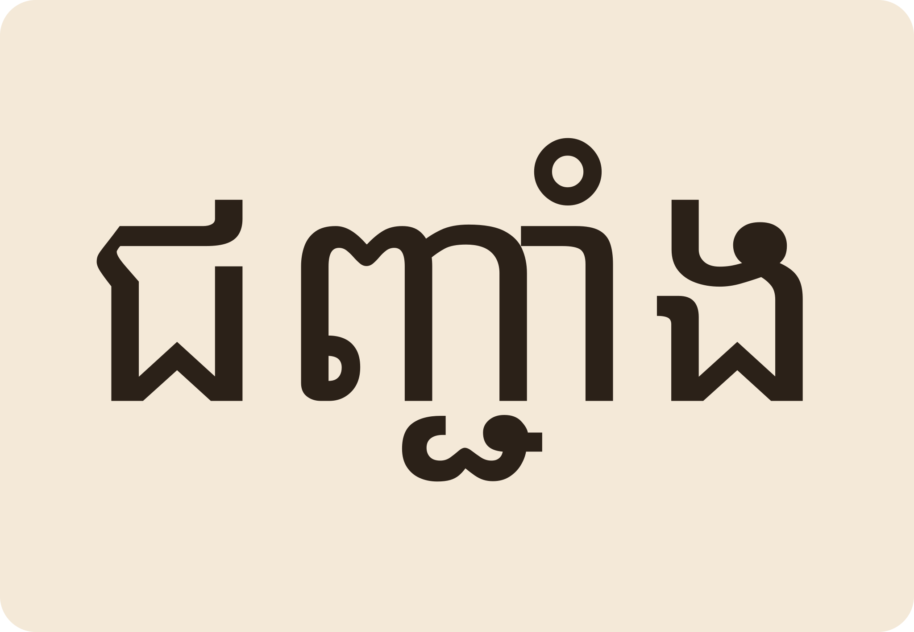
«ជញ្ជាំង» wall។ «ពូសាយដេញសង្គ្របចាប់កង្កែបក្នុងជញ្ជាំងស្រូវ»។
ជញ្ជាំង “wall”. Say chases crabs inside the rice-store wall.
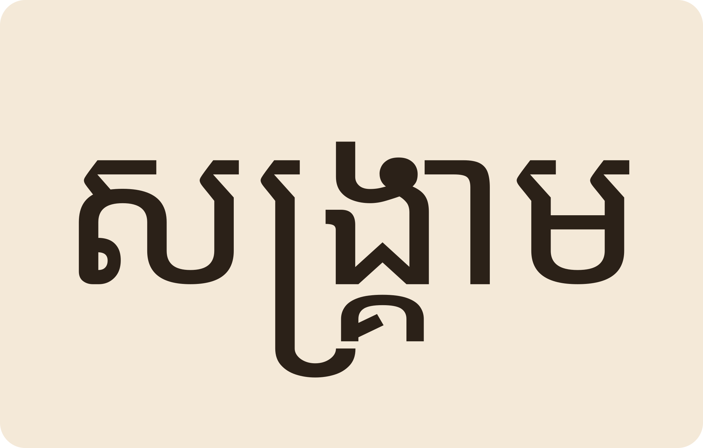
«សង្គ្រាម» war។ ជើង «គ» និង «រ» នៅក្រោម «ស»។
សង្គ្រាម “war” — គ and រ hide under ស.
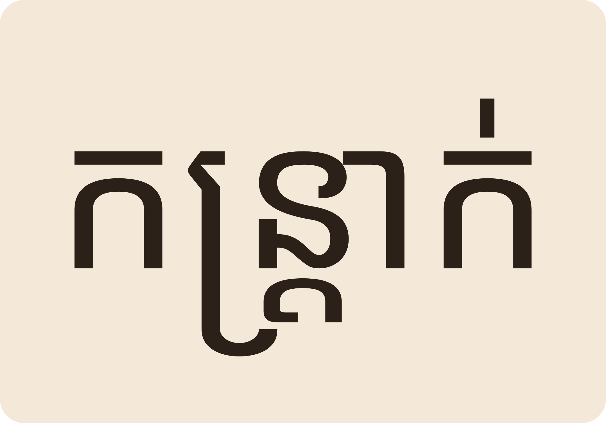
«ខ្យល់កន្ត្រាក់» strong gusts។ «មេឃភ្លៀងលាយខ្យល់កន្ត្រាក់ ធ្វើបាក់បង្កាន់ដៃផ្ទះយាយផាន់»។
Wind-gusts (ខ្យល់កន្ត្រាក់) broke the handrail of Grandmother Phan's house.
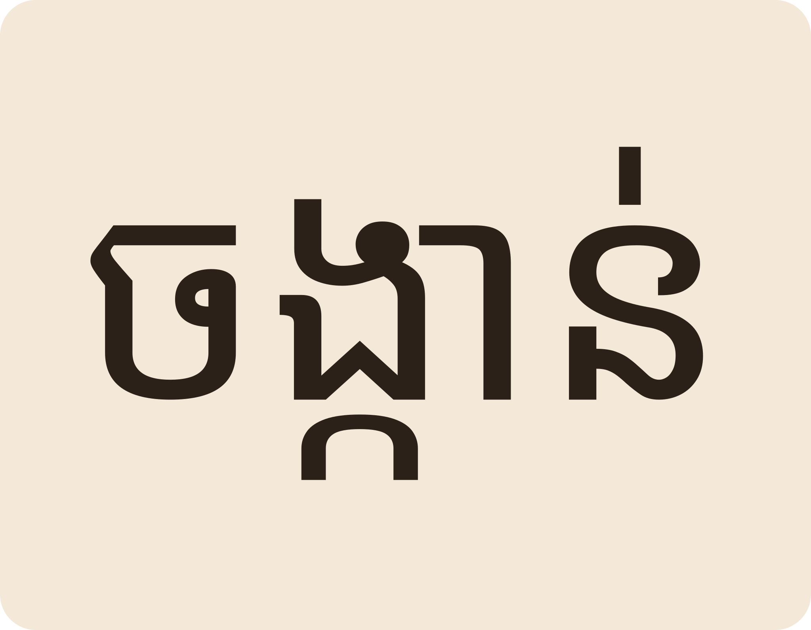
«ចង្កាន់» offering flag «កន្ត្រប់» betel container។ យាយផាន់ធ្វើចង្កាន់ទៅវត្ត។
ចង្កាន offering flag, កន្ត្រប់ betel box. Grandmother Phan makes flags for the pagoda.
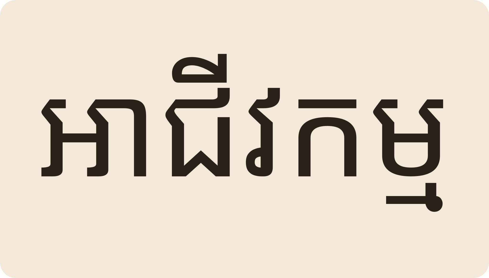
«ក្នុងសហគមន៍ខ្ញុំមានលក់គ្រឿងទេស ភេសជ្ជៈ សម្អាងកាយ កាត់សក់ លក់បាយ និងគុយទាវ»។
“In my community they sell spices, drinks, hairdressing, rice and noodles.”
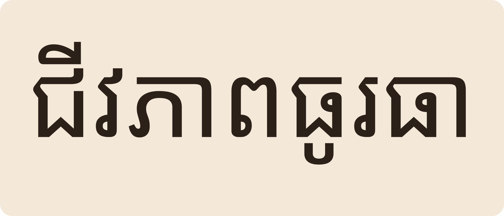
«ដោយសារមុខរបរលក់ដូរបន្ថែម គ្រួសារក្នុងសហគមន៍មានជីវភាពធូរធា»។
Extra trading work made every family in the community better off.
ទេ។ ព្យញ្ជនៈបីជាន់សុទ្ធតែនៅក្នុងព្យាង្គតែមួយ៖ «សង្គ្រាម» sɑŋ-kream ចង្វាក់តែមួយ។
No — the whole stack is ONE beat: “sɑŋkream”.
«អង្គ» body/self ជាពាក្យបាលី។ «អង្គត់» is a unit (dozen pair) នៅ «អង្គរ» ruins។ រៀនតាមបរិបទ។
Different words sharing a shell: body/self, a counting unit, and Angkor. Learn by context.
ការរស់នៅរួមគ្នាជាក្រុម ដូចជាភូមិឬឃុំរបស់យើង។
A community — people living together, like our village or commune.
គ្រឿងផឹកទាំងអស់ ទឹកតែ ទឹកអំពៅ ទឹកក្រូច។
Drinks of all kinds — tea, sugarcane juice, orange juice.
ប្រហាក់ប្រហែល។ «លក់ដូរ» ជាសកម្មភាពរកស៊ីទូទៅ «ទំនិញ» ជារឿងដែលលក់។
Nearly the same: លក់ដូរ is trading in general, ទំនិញ are the goods.
Tap a word's play button to hear it. Hide one side, then recall it before you tap to check.
«កញ្ចោង»។ «ក» ធំ «ញ» និង «ច» តូចជាន់គ្នា អាន kɑn-chong។ «ចង្កោន» ladle។ «កែវចង្កោនបាយ» a ladle of rice in a bowl។
កញ្ចោង: big ក with ញ and ច stacked small — one beat. ចង្កោន “ladle”: a bowl with a ladleful of rice.
«ជញ្ជាំង» wall។ «ពូសាយដេញសង្គ្របចាប់កង្កែបក្នុងជញ្ជាំងស្រូវ»។ «សង្គ្រាម» war។ ជើង «គ» និង «រ» នៅក្រោម «ស»។ «ខ្យល់កន្ត្រាក់» strong gusts។ «មេឃភ្លៀងលាយខ្យល់កន្ត្រាក់ ធ្វើបាក់បង្កាន់ដៃផ្ទះយាយផាន់»។ «ចង្កាន់» offering flag «កន្ត្រប់» betel container។ យាយផាន់ធ្វើចង្កាន់ទៅវត្ត។
ជញ្ជាំង “wall”. Say chases crabs inside the rice-store wall. សង្គ្រាម “war” — គ and រ hide under ស. Wind-gusts (ខ្យល់កន្ត្រាក់) broke the handrail of Grandmother Phan's house. ចង្កាន offering flag, កន្ត្រប់ betel box. Grandmother Phan makes flags for the pagoda.
«ក្នុងសហគមន៍ខ្ញុំមានលក់គ្រឿងទេស ភេសជ្ជៈ សម្អាងកាយ កាត់សក់ លក់បាយ និងគុយទាវ»។ «ដោយសារមុខរបរលក់ដូរបន្ថែម គ្រួសារក្នុងសហគមន៍មានជីវភាពធូរធា»។
“In my community they sell spices, drinks, hairdressing, rice and noodles.” Extra trading work made every family in the community better off.
Q. «សង្គ្រាម» អាន «សង-គ្រាម» ទេ?
Q. Is សង្គ្រាម two beats, song-kriam?
A. ទេ។ ព្យញ្ជនៈបីជាន់សុទ្ធតែនៅក្នុងព្យាង្គតែមួយ៖ «សង្គ្រាម» sɑŋ-kream ចង្វាក់តែមួយ។
A. No — the whole stack is ONE beat: “sɑŋkream”.
Q. «អង្គ» នៅ «អង្គបុរី» និង «អង្គត់» ដូចគ្នាទេ?
Q. Is អង្គ the same in អង្គបុរី and អង្គត់?
A. «អង្គ» body/self ជាពាក្យបាលី។ «អង្គត់» is a unit (dozen pair) នៅ «អង្គរ» ruins។ រៀនតាមបរិបទ។
A. Different words sharing a shell: body/self, a counting unit, and Angkor. Learn by context.
Q. «សហគមន៍» ន័យអ្វី?
Q. What does សហគមន៍ mean?
A. ការរស់នៅរួមគ្នាជាក្រុម ដូចជាភូមិឬឃុំរបស់យើង។
A. A community — people living together, like our village or commune.
Q. «ភេសជ្ជៈ» ជាអ្វី?
Q. What are ភេសជ្ជៈ?
A. គ្រឿងផឹកទាំងអស់ ទឹកតែ ទឹកអំពៅ ទឹកក្រូច។
A. Drinks of all kinds — tea, sugarcane juice, orange juice.
Q. «លក់ដូរ» និង «លក់ទំនិញ» ខុសគ្នាទេ?
Q. លក់ដូរ vs លក់ទំនិញ?
A. ប្រហាក់ប្រហែល។ «លក់ដូរ» ជាសកម្មភាពរកស៊ីទូទៅ «ទំនិញ» ជារឿងដែលលក់។
A. Nearly the same: លក់ដូរ is trading in general, ទំនិញ are the goods.
ហាងនេះលក់អ្វីខ្លះ?
What does this shop sell?
តម្លៃប៉ុន្មាន?
How much is it?
Say it in your head first, then tap the box to check.